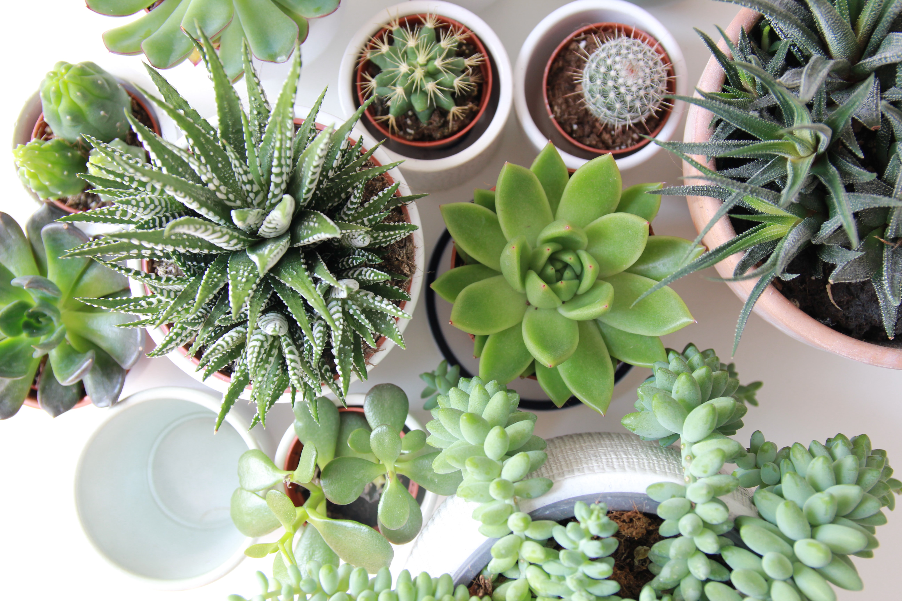

먼저, 작은 손을 조심스레 뻗은 이 친구는 벽어연이다. 우리집에 제일 처음 도착한 아이인데, 둘째 셋째와 같이 들어왔지만 땅을 딛은 건 이 애가 처음이다. 달에 도착한 첫번째 우주비행사만을 기억하는 것은 매우 슬픈 일이지만, 굳이 의미를 부여한다면 그렇다는 것이다.
집에서의 이름은 미구엘. 그렇다, 본인은 픽사/디즈니 애니메이션 보고 감명받는 어른이 중 한 명이다. 코코를 보고 감명받아 지은 이름. 즉, 코코도 나올 예정이다. 아무튼 이 친구는 물이 부족하면 잎이 쭈글쭈글해지는 아주 명확한 표현을 해주는 훌륭한 친구다. 흙에 가까운 잎부터 쭈글해지기 때문에 적당히 지켜보다 물을 흠뻑 주면 된다. 위에서 뿌리는 것보다 저면관수 해주는게 좋은 것 같다. 저면관수 한 번 해주면 금새 잎이 통통해지는데, 정말 귀엽다. 진심이다. 이렇게 하루 이틀 지내다보면 잎의 끄트머리에서 또다른 봉오리를 틔우기 시작한다. 미구엘의 똥글똥글한 얼굴과 그 콧망울을 닮았다.
coding